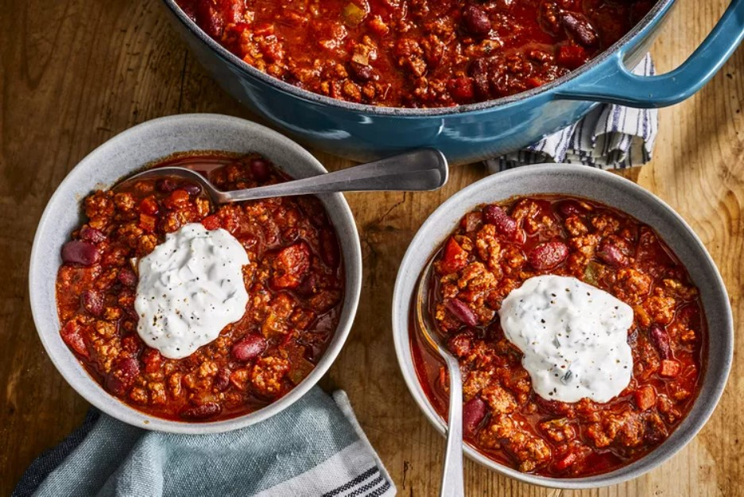

Best Damn Chili

This is one of the highest-rated chili recipes on allrecipes!
A great chili recipe, the Best Damn Chili is a dish to die for. It's hearty, meaty, and just the right level of spice. Nothing beats this chili, nothing!
Although this chili recipe is the best you can find, it's quite a list! Nearly everything but the kitchen sink is going to be used here. Make no mistake though, it's worth it! And if you happen to make too much, that's a very good problem to have! Let's see what we'll need:
Ingredients
- 4 tablespoons olive oil
- 1 yellow onion, chopped
- 1 red bell pepper, chopped
- 1 Anaheim chili pepper, chopped
- 2 red jalapeno pepper, chopped
- 4 garlic cloves, minced
- 2½ pounds lean ground beef
- ¼ cup Worcestershire sauce
- 1 pinch garlic powder, or to taste
- 2 beef bouillon cubes
- 1 (12 fluid ounce) can or bottle light beer (such as Coors®)
- 1 (28 ounce) can crushed San Marzano tomatoes
- 1 (14.5 ounce) can fire-roasted diced tomatoes
- 1 (12 ounce) can tomato paste
- ½ cup white wine
- 2 tablespoons chili powder
- 2 tablespoons ground cumin
- 1 tablespoon brown sugar
- 1 tablespoon chipotle pepper sauce
- 2½ teaspoons dried basil
- 1½ teaspoons smoked paprika
- 1 teaspoon salt
- ½ teaspoon dried oregano
- ½ teaspoon ground black pepper
- 2 (16 ounce) cans dark red kidney beans (such as Bush's®)
- 1 cup sour cream
- 3 tablespoons chopped fresh cilantro
- ½ teaspoon ground cumin
Steps
- Heat oil in a large pot over medium heat; cook and stir onion, bell pepper, Anaheim pepper, jalapeno peppers, and garlic in the hot oil until softened.
- Meanwhile, heat a large skillet over medium-high heat. Cook and stir beef in the hot skillet until browned and crumbly, 5 to 7 minutes; add Worcestershire sauce and garlic powder. Crumble bouillon cubes over beef and add beer. Continue to cook , scraping any browned bits from the bottom of the skillet, until liquid is hot, about 3 minutes. Stir beef mixture into pepper mixture.
- Stir crushed tomatoes, diced tomatoes, tomato paste, and wine to the beef mixture. Season with chili powder, 2 tablespoons cumin, brown sugar, pepper sauce, basil, paprika, salt, oregano, and black pepper. Bring to a boil and reduce heat to medium-low. Cover and simmer until meat and vegetables are very tender and flavors have developed in the chili, about 90 minutes, stirring occasionally.
- Mix kidney beans into beef and vegetables. Continue to simmer until beans are hot, about 30 minutes more.
- Blend sour cream, cilantro, and remaining 1/2 teaspoon cumin in a food processor until smooth. Serve sour cream mixture with chili.